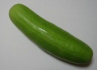

白うりの生産量 都道府県ランキング
全23都道府県の順位と収穫量
白うりの収穫量が全国で最も多いのは徳島県で、1,470 tです。全国（2,280 t）の64%を占めます。

| 順位 | 都道府県 | 収穫量 | 全国に占める割合 |
|---|---|---|---|
| 1位 | 徳島県 | 1,470 t | 64% |
| 2位 | 千葉県 | 404 t | 18% |
| 3位 | 愛知県 | 132 t | 5.8% |
| 4位 | 大阪府 | 58 t | 2.5% |
| 5位 | 福岡県 | 47 t | 2.1% |
| 6位 | 滋賀県 | 30 t | 1.3% |
| 7位 | 京都府 | 22 t | 1.0% |
| 8位 | 群馬県 | 20 t | 0.9% |
| 9位 | 大分県 | 16 t | 0.7% |
| 10位 | 広島県 | 15 t | 0.7% |
| 11位 | 神奈川県 | 14 t | 0.6% |
| 12位 | 山梨県 | 10 t | 0.4% |
| 13位 | 和歌山県 | 9 t | 0.4% |
| 14位 | 佐賀県 | 9 t | 0.4% |
| 15位 | 長野県 | 7 t | 0.3% |
| 16位 | 熊本県 | 7 t | 0.3% |
| 17位 | 長崎県 | 4 t | 0.2% |
| 18位 | 兵庫県 | 3 t | 0.1% |
| 19位 | 香川県 | 3 t | 0.1% |
| 20位 | 青森県 | 2 t | 0.1% |
| 21位 | 静岡県 | 2 t | 0.1% |
| 22位 | 福島県 | 1 t | 0.0% |
| 23位 | 埼玉県 | 1 t | 0.0% |
PR

白うりの生産量の推移（令和2年産〜令和6年産）
全国の収穫量は、令和2年産の3,080 tから令和6年産の2,280 tへ、26%減りました。期間中、1位は一貫して徳島県です。
| 年 | 全国 | 1位 | 2位 | 3位 |
|---|---|---|---|---|
| 令和6年産 | 2,280 t | 徳島県1,470 t | 千葉県404 t | 愛知県132 t |
| 令和4年産 | 4,810 t | 徳島県3,800 t | 千葉県494 t | 福岡県91 t |
| 令和2年産 | 3,080 t | 徳島県1,800 t | 千葉県773 t | 愛知県78 t |
この数字について
- 分類：ウリ科
- 全国の収穫量：2,280 t
- この数字が表すもの：収穫量（収穫された重量）
- 調査：地域特産野菜生産状況調査 令和6年産
- 23県分を調査（調査していない県は順位に入りません）
白うりの生産量について、よくある質問
- 白うりの生産量が日本一の都道府県はどこですか？
- 徳島県です。地域特産野菜生産状況調査（令和6年産）で1,470 tでした。
- 白うりの生産量ランキング2位・3位はどこですか？
- 2位は千葉県（404 t）、3位は愛知県（132 t）です。
- 白うりの生産量ランキング4位・5位はどこですか？
- 4位は大阪府（58 t）、5位は福岡県（47 t）です。白うりの全23県の順位は上の表のとおりです。
- 白うりの全国の生産量はどれくらいですか？
- 2,280 t（令和6年産）です。